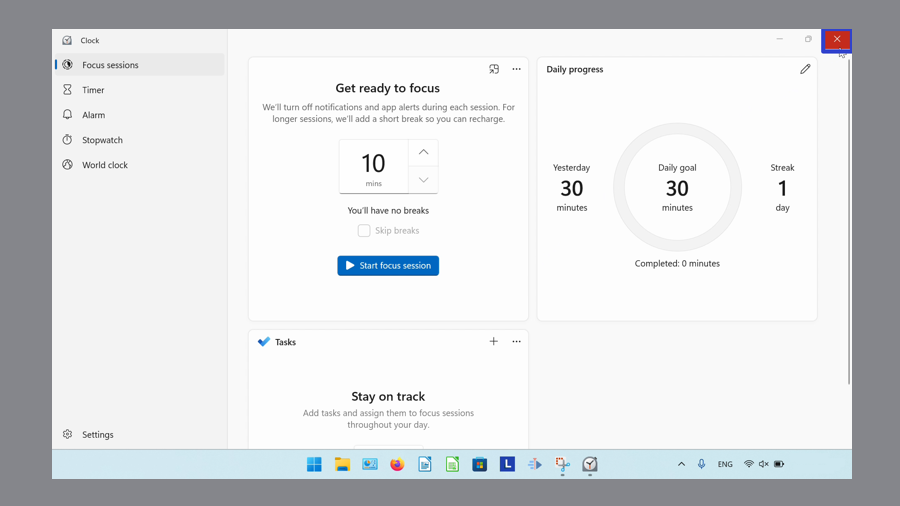
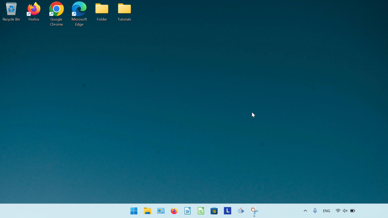
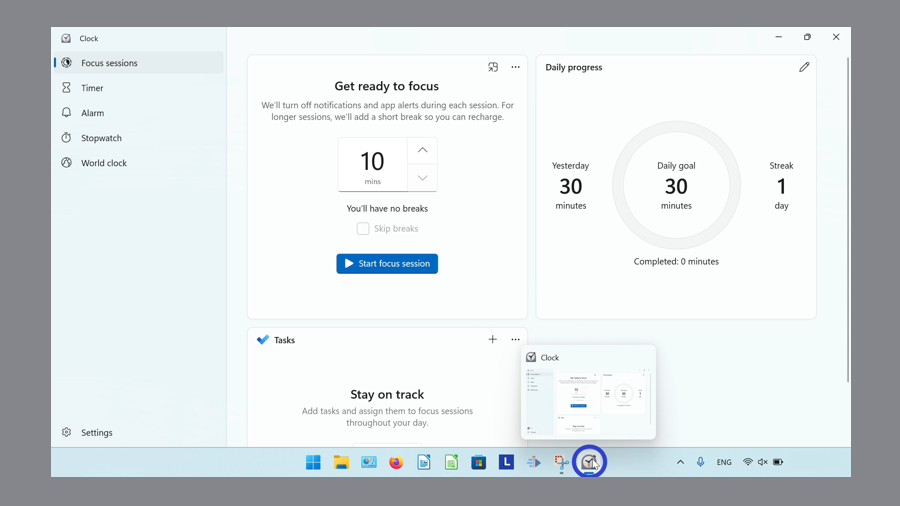
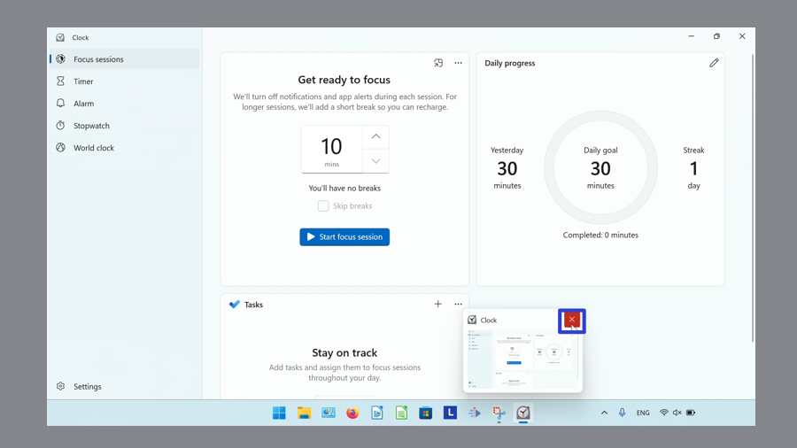
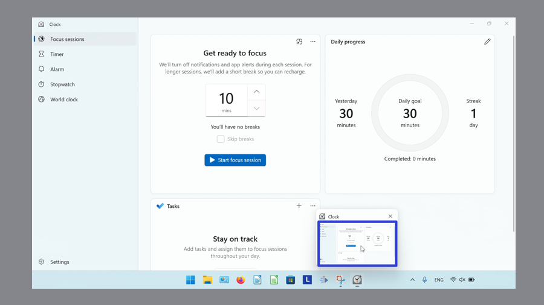
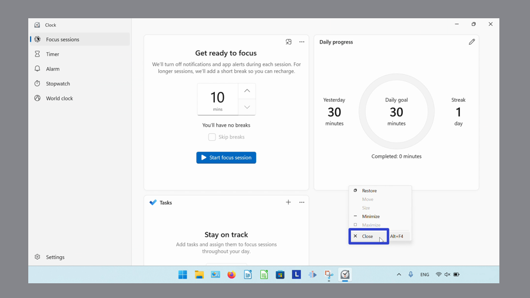
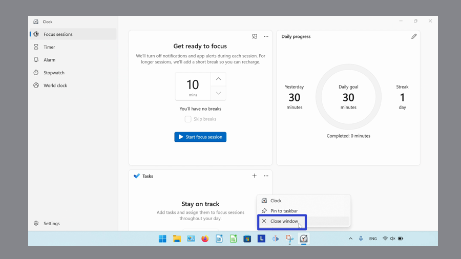
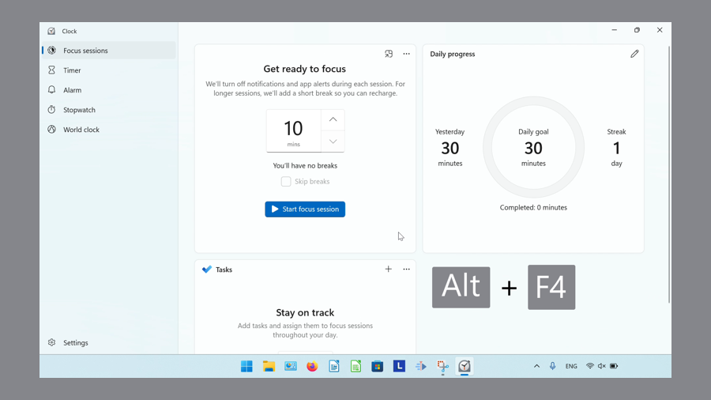

How to Close the Microsoft Windows Clock (Windows 11)
This tutorial covers:
How to Close the Microsoft Windows Clock:
No time to scroll down? Click through this tutorial presentation:
Watch a tutorial video:
How to Close the Microsoft Windows Clock With Click
- Step 1: First open Windows Clock. In the upper right corner, click the “Close” or “X” button. 
- The Windows Clock app closes. 
How to Close the Microsoft Windows Clock With Hover
- Step 1: Open Windows Clock. Go down to the taskbar and hover the mouse over the Windows Clock app icon. 
- Step 2: In the upper right of the small window that appears, click the “Close” or “X” button. 
- The Windows Clock app closes.
How to Close the Microsoft Windows Clock With Menu
- Step 1: First open Windows Clock. Go down to the taskbar and hover the mouse over the Windows Clock app icon.
- Step 2: Right click the small window that apepars. 
- Step 3: In the menu that opens, click “Close”. 
- The Windows Clock app closes.
How to Close the Microsoft Windows Clock With Right Click
- Step 1: Open Windows Clock. Go down to the taskbar and right click the Windows Clock app icon.

- Step 2: In the menu that opens, click “Close window”. 
- The Windows Clock app closes.
How to Close the Microsoft Windows Clock With Keyboard Shortcut
- Step 1: First open Windows Clock. On the keyboard press Alt + F4 (some computers accept this shortcut as Fn + Alt + F4). 
- The Windows Clock app closes.
Keep a copy of these instructions for later with this free PDF tutorial.